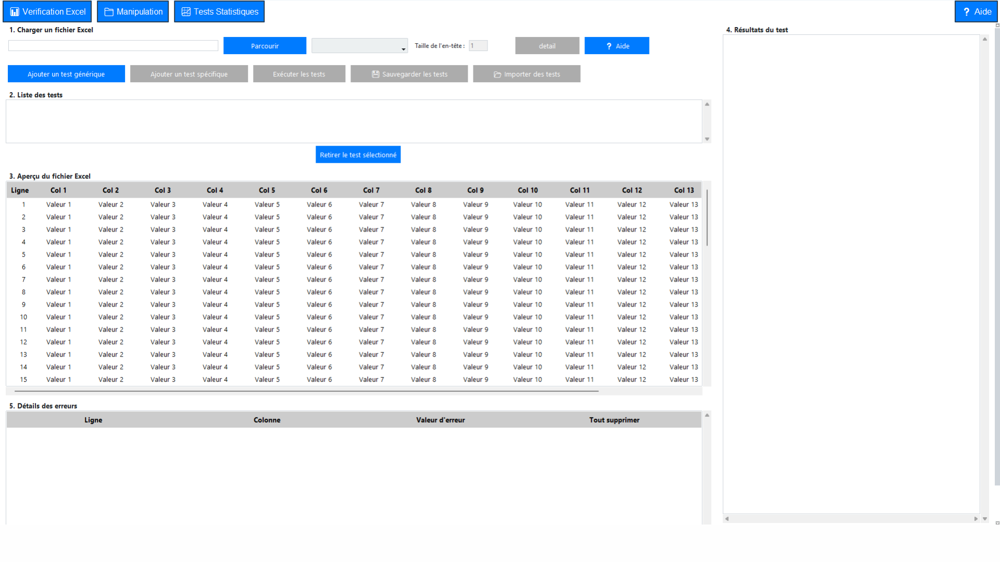

Helpis

Développement d’une application Python permettant l’assistance au traitement et à l’analyse de données de laboratoire.
. *
* . .
* .
. * .
. . *
* .
O
/|\
/ \
/\
/__\
/| |\
/_|__|_\
/||\
/_||_\
/__||__\
/___||___\
. . .
. * . *
. . * .
. * ~ ~ ~ * .
~ ~ ~ ~ ~ ~ ~ ~ ~
~ ~ ~ ~ ~ ~ ~ ~ ~ ~
~ ~ ~ ~ ~ ~ ~ ~ ~
. ~ ~ ~ ~ ~ ~ ~ ~ ~ .
. ~ ~ ~ ~ ~ ~ ~ ~ .
. ~ ~ ~ ~ ~ .
* ~ ~ *
. . . . .
. . . .
. . . . . . . .
--[ À PROPOS ]--
Marius Chartier-Le Goff — étudiant en 3ᵉ année de BUT Informatique.
“Je suis étudiant en 3e année d’un BUT informatique et je suis à la recherche d'un stage pour conclure ma formation.”
Voir plus--[ PROJETS ]--
Développement d’une application Python permettant l’assistance au traitement et à l’analyse de données de laboratoire.

Mise en place d'un site de voyage fonctionnel.
Développement d'une application de recommandation musicale.
--[ DOMAINES DE COMPÉTENCES ]--
Concevoir, développer et maintenir des applications informatiques en respectant les besoins fonctionnels et techniques.
Améliorer les performances, la qualité et la maintenabilité des applications existantes.
Administrer des systèmes informatiques et comprendre les bases des réseaux et des services serveurs.
Planifier, organiser et suivre un projet informatique en respectant les contraintes de qualité et de délais.
Participer activement à la conduite de projets en appliquant des méthodes de travail structurées.
Collaborer efficacement au sein d’une équipe informatique en communiquant de manière claire et professionnelle.
--[ CV ]--
Télécharger le CV : Télécharger
--[ CONTACT ]--
mail : marius.clg.important@laposte.net
LinkedIn : Mon profil LinkedIn